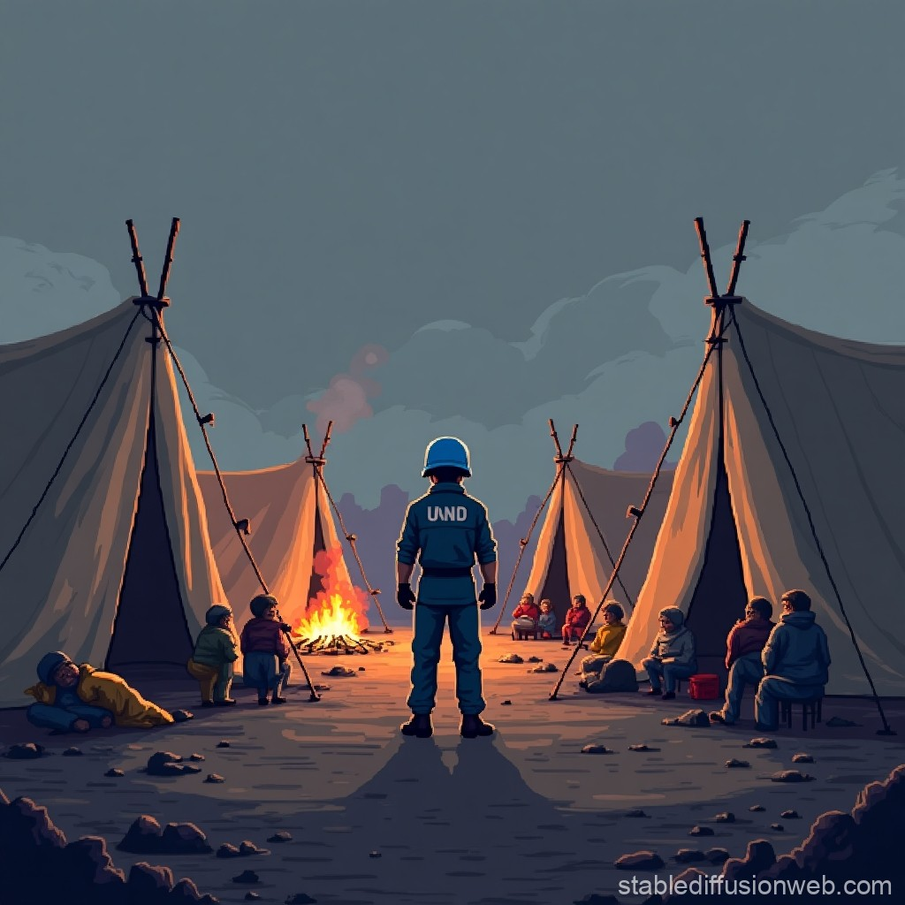

Your peacekeepers engage with M23 fighters. The firefight is intense but your forces manage to hold the perimeter. Several peacekeepers are wounded, and the clinic sustains some damage, but civilians are protected.
You focus on evacuation. As civilians flee, M23 forces arrive and burn the clinic. Medical supplies are lost, but most civilians escape safely thanks to your intervention.
You establish radio contact with the M23 commander. After tense negotiations, they agree to bypass the clinic in exchange for non-interference with their movement through a nearby valley.
The survivor's testimony provides critical evidence of war crimes. UN investigators document the details, and an international human rights organization takes interest in building a case.

You decide against recording her testimony to protect her from reprisals. The woman thanks you, though the truth of what happened remains undocumented. You arrange for her safe transport to a more secure location.